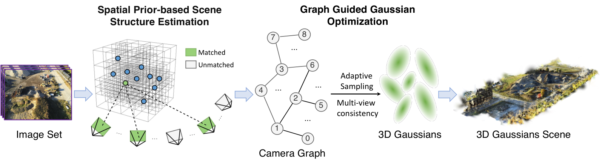
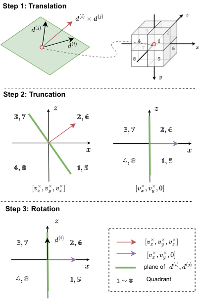
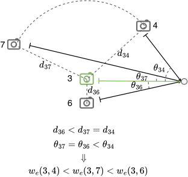
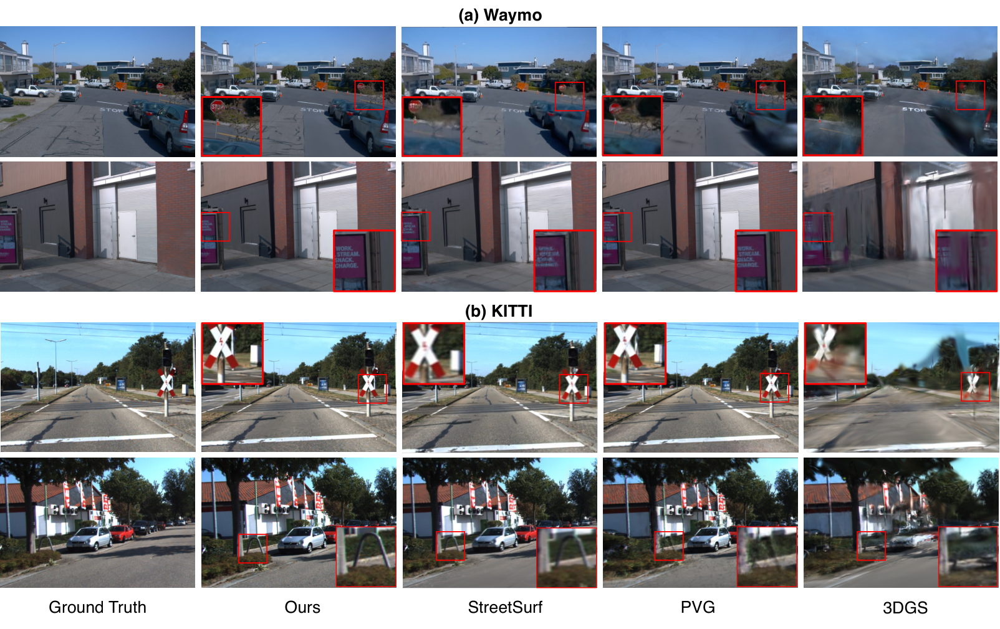
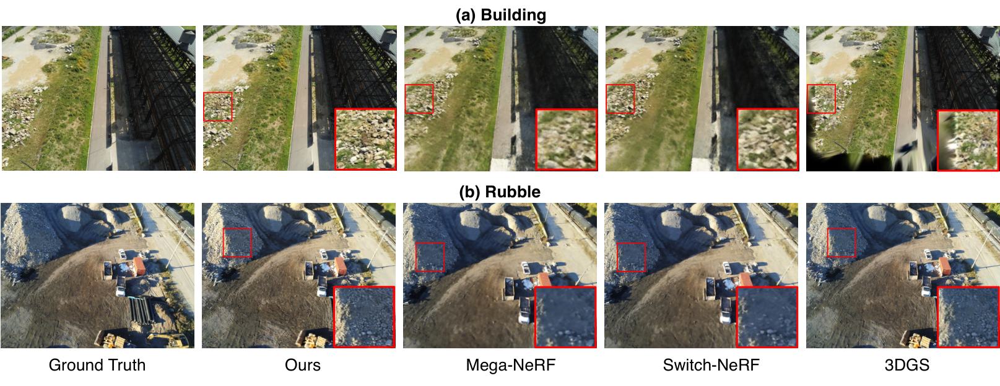
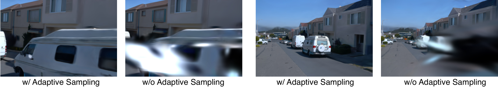
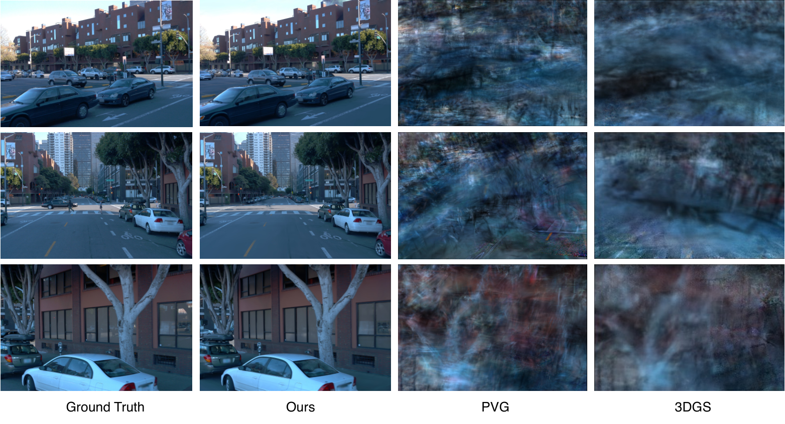

问题:从数千张无标定(无精确位姿)RGB 图像重建大规模开放 3D 场景,是 COLMAP 时代的老大难——exhaustive 匹配随图像数平方增长(2k 图像 COLMAP SfM >24h 且常失败,表3),而 3DGS 在稀疏边界视角下容易过拟合到个别相机。方法:GraphGS 先用预训练相对位姿模型(论文引 Wang et al. 2024,即 DUSt3R,约 0.01s/对)拿到粗糙相机分布,再提出同心近邻配对(CNNP)与象限过滤器(QF)把匹配对从 $C_N^2$ 压到 $O(N)$ 量级(0.6k 图选 ~18k/18 万对,2k 图选 ~200k/200 万对,附录F),喂给 COLMAP 的 matches_importer + 调参 mapper 完成 BA;匹配过程顺手产出相机图,节点=相机、边=匹配对,图上再定义两件事指导 3DGS 训练:边权重驱动的多视角一致性损失与节点介数中心性驱动的自适应采样。结果:Waymo PSNR 29.43 / SSIM 0.899(对比 PVG 28.11 / 0.849,表1),Mill-19 Building 26.60(对比 VastGaussian 23.50,表2),SfM 提速约 20×(匹配)+ 5~7×(BA)(表3),训练时长近乎减半(54min→28min,表5)。

失败模式:exhaustive 匹配取全部 $C_N^2$ 图像对,匹配时间随图像数「指数级」恶化(论文原文措辞;实际为平方级)。2k 图像规模下无论 exhaustive 还是 vocab-tree 均 >24h 且「总是失败」(表3);0.6k 也要 62min 匹配 + 140min BA。此外还有匹配失败导致注册不上相机的实际风险(§1)。
BARF/GARF/Joint-TensoRF 联合优化位姿与场景。失败模式:仅在物体级场景验证,推广到大场景失败——BARF 在 Waymo/KITTI 直接不收敛(PSNR 9.07/10.68,表1),SPARF 只适合稀疏图像集、UP-NeRF 在 KITTI 不收敛(§4.2)。
VastGaussian/PVG 等默认拿 GT 或 COLMAP 位姿。失败模式:开放场景边界视角稀疏,单视角监督让高斯过拟合到特定相机附近(§3.2.1);给位姿加 0.3 rad/0.3 单位噪声后 3DGS/PVG 崩到 PSNR≈12.7(表9),鲁棒性差。
*graphinfo.json)。| 符号 | 含义 | 形状 / 取值 |
|---|---|---|
| $N$ | 图像/相机数 | 600 / 100 / 2000(附录F) |
| $c_i$, $p^{(i)}$, $d^{(i)}$ | 第 $i$ 个相机、其位置、朝向单位向量 | $p\in\mathbb{R}^3$, $d\in\mathbb{R}^3$ |
| $s(i,j)$ | $c_j$ 相对 $c_i$ 的距离升序名次(1=最近) | $1..N{-}1$ |
| $r,h,w$ | CNNP 参数:近邻数 / 跳隔 / 环带宽度 | $r{=}5,h{=}20,w{=}1$(附录F;代码默认 arg_r=5, arg_k=10, arg_w=1,run_modifyMatch.py:35-37) |
| $S_{\text{neighbor}},S_{\text{concentric}},S_{\text{connection}}$ | 近邻集 / 同心环集 / 链式连接集 | 图像对集合,式(1) |
| $\mathcal{B}_p^{(i,j)},\mathcal{B}_d^{(i,j)}$ | 相对位置 / 相对朝向的 3-bit 象限编码 | 各 8 态,拼成 6-bit $\mathcal{B}^{(i,j)}$,式(2)(4)(6) |
| $w_e(i,j)$ | 相机图边权重 | 式(7);代码实现有出入,见 §12 差异表 |
| $w_n(i)$ | 节点权重(介数中心性) | 式(9);代码实际用介数+度中心性均值,见 §12 |
| $P(i)$ | 相机 $i$ 参与优化的采样概率 | 式(10);论文称下限 0.5,代码实为 0.7,见 §12 |
| $\lambda$ | 一致性损失权重 | 论文附录F:0.07;代码默认 0.05(train.py:263),见 §12 |
| $\tau$ | 八叉树 LOD 剪枝阈值 | 论文 §3.1.3 提及但⚠️【待核实】 未给数值;发布代码中无八叉树实现 |
| $\sigma_{jk},\sigma_{jk}(i)$ | $j{\to}k$ 最短路数 / 其中过 $i$ 的条数 | 介数中心性定义,式(9) |
阶段划分:① 粗位姿(DUSt3R,外置)→ ② 匹配对生成(CNNP+QF,纯 CPU 几何判断)→ ③ COLMAP 特征匹配+BA(仍是主力 SfM 引擎)→ ④ 图引导 3DGS 训练。注意 GraphGS 不是端到端位姿自由方法:它仍然跑 COLMAP 的 feature_extractor 与 mapper,只是把「匹配谁」的决策权从 COLMAP 手里拿走(源码 run_modifyMatch.py 全流程复核,见 §12)。
穷举匹配的 $C_N^2$ 对里,绝大多数是「隔了半条街、视野零交叠」的无效对。但简单只配近邻又会丢失全局结构,导致 BA 把场景拼成几段互不连通的碎片。CNNP 的原则(§3.1.1 原文):「被选图像对的分布应同时反映局部与全局结构」。
三类对的职责:$S_{\text{neighbor}}$(最近 $r$ 个)保证局部 BA 稳定性;$S_{\text{concentric}}$(距离名次每 $h{+}w$ 取前 $w$ 个,形成一圈圈同心环)提供局部→全局的平滑过渡;$S_{\text{connection}}$(按序号的链式相邻对)是连通性保险——附录 A 用反证法给出反例($r{=}2,h{=}N{-}3,w{=}1$ 时 8 个相机可裂成两个连通分量,论文 Figure 7),证明仅靠前两类对无法保证图连通,而 BA 要求图是一个连通分量(代码侧强校验:match_script.py:140-142 图非单连通分量直接 raise)。$S_{\text{connection}}$ 的对不受 QF 过滤(代码 match_script.py:101-102 在 QF 之后把连接对补回)。
read_coarse_cam/json_read_cam.py:40-53 读 camera_info_opencv.json,取 c2w 矩阵的平移列与朝向列($z$ 轴);match_script.py:349 cKDTree(all_coords),论文 §3.1.1 也明确用 KD-Tree 加速距离检索;match_script.py:353 kdtree.query(query_point, k=cam_num);:354-356)→ 加最近 $r$ 个(:357-358)→ 名次 $j>r$ 且 $(j{-}r)\bmod k{=}0$ 的连续 $w$ 个(:359-363);remove_duplication,match_script.py:174-197),无序对排序后落盘 pairs_*.txt。复杂度与量级:配对本身 0.6k 图仅 0.2min、2k 图 2.1min(表10);选出对数约 $18\text{k}/C_{600}^2$(≈10%)、$200\text{k}/C_{2000}^2$(≈10%)(附录F,按 $r{=}5,h{=}20,w{=}1$)。可导性:该模块为离散集合选择,不可导、不参与反向传播。
论文 Figure 2(左)为 TikZ 矢量示意图,HTML 版无位图,本笔记以上图重述其逻辑。代码中 $h$ 命名为 arg_k(run_modifyMatch.py:36,默认 10),论文附录F 实验用 $h{=}20$,复现时需显式传 --arg_k 20。
监督信号:本模块无监督信号,是纯几何先验筛选;其质量由下游 BA 成功率与最终 PSNR 间接体现(消融 w/o CNNP:PSNR 30.36→24.33,表4)。
CNNP 按距离选 pair,但「距离近」不等于「看得见面」——两个背对背的近距相机视野零交叠,送进匹配既浪费时间又向全局 BA 注入噪声(§3.1.2)。QF 用极廉价的几何编码把这类「噪声对」剔除。
相对位置编码(3-bit,8 象限):
相对朝向编码(命题 1:避免解线性方程组,1 次叉乘 + 1 次内积):
其中 $[d_\times^{(i)}]$ 为叉乘反对称矩阵(式(5))。附录 C 给出证明并化简为无矩阵形式 $\mathcal{B}_d^{(i,j)}=\{\mathrm{sgn}(v_x^\times),\mathrm{sgn}(v_y^\times),\mathrm{sgn}(d^{(i)}{\cdot}d^{(j)})\}$(式(16),与代码 match_script.py:323-336 的 np.cross+np.dot 符号位实现一致)。拼接成 6-bit $\mathcal{B}^{(i,j)}=\mathcal{B}_p^{(i,j)}\oplus\mathcal{B}_d^{(i,j)}$(式(6))后,直接查 8×8 状态表(附录B 表6)判定保留/剔除。
即随机位姿假设下,严格模式理论过滤 81.3% 噪声对、宽松模式也达 37.5%(论文 §3.1.2 正文写 "more than 38%",与式(13) 自洽)。代码 pd_match(match_script.py:277-293)内置两张表 match_list_v1(strict)/match_list_v2(loose),与论文表6 逐项一致;默认 loose(车辆轨迹狭长,附录B),--arg_s True 切严格。
附录E 表10:naive frusta 方法 0.6k 图配对耗时 2min(vs QF 0.2min),2k 图 20min(vs 2.1min),且狭长车载轨迹下「所有相机朝向几乎相同,frusta 无法有效过滤」导致匹配 >24h 失败。QF 只需外参的平移+朝向列(3、4 列),不需要内参,而 frusta 需要内参算近平面——这是「1 次叉乘+1 次内积」对「坐标变换+包围盒求交」的普适性胜利。

监督信号:无监督,几何查表;消融 w/o QF PSNR 30.36→29.14(表4),幅度小于 w/o CNNP,说明 QF 是「锦上添花防噪声」,CNNP 才是「保命结构」。
设计动机:SfM 稀疏点中并非所有点对重建质量贡献相同;借鉴 PlenOctrees,用八叉树按 LOD 管理初始点,把低于细节阈值 $\tau$ 的节点整枝剪掉。论文 §4.1 报告实际把初始点从约 300k 剪到 100k;附录E 表8:245,820 点/54min → 100,000 点/36min,PSNR 几乎不变(29.74→29.75)。
git clone 主分支,2026-10 快照)中不存在任何八叉树实现——全仓搜索 octree 仅命中 utils/sh_utils.py 里 PlenOctree 的版权头;scene/__init__.py:83 直接 create_from_pcd(scene_info.point_cloud) 加载 COLMAP 全量稀疏点。阈值 $\tau$ 的取值论文与代码均无。⚠️【待核实】 该模块可能存在于作者未发布的内部版本;用公开代码复现时,表8 的 54→36min 收益无法获得,初始点规模将是 COLMAP 原始输出。此外论文 §4.1 写「300k→100k」而表8 写「245,820→100,000」,两处数字口径不一致(可能场景不同,论文未注明)。结构表(论文描述):输入 COLMAP 稀疏点云 $[M,3]$ → 八叉树按空间递归划分 → 逐节点评估 LOD,低于 $\tau$ 的节点整枝剪除 → 输出约 $M/3$ 的初始化点。监督信号:无,纯预处理。
节点:每个视角相机(存其精炼后 $R,T$);边:§3.1 选出的匹配对。无向加权图,代码用 networkx 构建(match_script.py:124-150 to_graph),构建时强校验单连通分量(:140-142),序列化为 pairs_*_graphinfo.json 与配套 *_caminfo.json 供训练阶段读取(train.py:282-291)。
直觉:距离越近、朝向夹角越小,边权越大(论文 Figure 3 示例)。但代码实现为(match_script.py:133,默认 k=0.5,见 :124):

监督信号:图本身无监督;边权重是 §8 一致性损失选目标视角的依据、节点中心性是 §9 采样概率的依据。
开放场景边界视角稀疏,3DGS 的单视角光度监督会让高斯「长」在少数相机附近、过拟合特定视角(§3.2.1)。论文的观察:方向差异小的相邻视角应有几乎一致的光度值(引 Kloukiniotis et al. 2022),因此可以用另一个视角的渲染结果作为伪监督源,逼高斯在视角间保持一致。
$R_{ji},T_{ji}$ 为相机 $i\to j$ 的相对旋转平移,$\mathbf{K}_i,\mathbf{K}_j$ 为内参。目标视角选择规则(论文表述):遍历相机 $i$ 的所有边,取边权重最大的相机作为 $j$。论文自承一个反直觉点:目标视角的渲染结果可能比 GT 差很多,但它起类似数据增强的作用,反而抑制过拟合。
代码实现在 utils/loss_utils.py:299-358 compute_multiview_consistency_loss,被 train.py:129-138 调用:
image 与目标视角的缓存渲染图(非 GT;train.py:150-151 每轮把渲染图与相机参数以 .cpu() 缓存进 images_dict/view_dict,目标视角必须已被采样渲染过,否则该轮不加一致性项,train.py:129);loss_utils.py:319-334),compute_transform_c2w(:112-125)算相对位姿,compute_homography(:128-144)假设所有像素位于深度 $d=1.0$ 的平面上,再 cv2.warpPerspective(:241-249)把目标渲染图 warp 到当前视角;:342-344),$L=\text{L1}(I_{\text{cur}},I_{\text{warped}})\odot mask$(:347),总损失中乘 consistency_weight(train.py:138);return 0 损失 + 全 1 mask(:350-354),不报错——训练日志里看不出一致性项是否真正生效。utils/read_graph.py:54-61 却取第 5 大权重的边(不足 6 条边时取最后一条;train.py:112-115 读取,取不到再退化为文件名序号 $-1$ 的 get_mulitview_node,train.py:25-35)。选「次优邻居」也许是有意拉开视差、增强增强效应,但论文未提,属实现与叙述不一致。③ 单应假设——式(8) 是逐像素精确重投影,代码退化为 $d{=}1.0$ 的平面单应,对远景/近平面场景近似尚可,近景视差大的区域 warp 错位,一致性项会注入错误梯度;掩码只检查像素非零,不检查 warp 越界或深度合理性。⚠️【待核实】 单应近似对车载前视远场景(论文主战场)误差可控,但对环绕采集的近景可能有害,论文无任何讨论。监督信号:本模块即监督信号本身(自监督,无 GT 参与);消融 w/o Multi-view Consistency PSNR 30.36→29.42、SSIM 0.891→0.834(表4),主要涨 SSIM。
外围节点(与其他视角重叠少)提供的信息少,却与枢纽节点等概率被采样——既浪费迭代又容易过拟合。思路:按图中节点重要性动态调整每个相机参与优化的概率,「不重要的视角少训」。
论文讨论了两个候选重要性指标(度中心性、介数中心性),并称「实验发现只用介数中心性更好」,故式(9) 定为介数中心性;$P(i)$ 为归一化采样概率,附录F 补充设最小采样概率 0.5 防低权节点被饿死。效果:30k 标称迭代实际只执行约 16.8k 次有效优化(表5),训练 54min→28min 且 PSNR 反升 28.81→30.36。
utils/read_graph.py:78-134 同时算介数中心性(:80,weight=None,即忽略边权按无权图算最短路,与论文式(9) 基于加权图的叙述不完全一致)与度中心性(:98),各自 min-max 归一化后取二者平均 combined=(betweenness+degree)/2(:131-134)——论文称「只用介数更好」,代码却用了两者平均;train.py:94-109 是二值逻辑——combined/0.045 ≥ 1 则权重 1,≤ 0.7 则权重 0.7,其余默认 1;且只在 iteration ≤ 29800 前生效(train.py:107 的魔法数,30000 总迭代的最后 200 步强制全量采样);read_graph.py:138-144 构建 imagename_weight_dic 时,成功分支写成 imagename_weight_dic[image_name] = ...(:141),而 image_name 是前面第 12-19 行循环遗留的陈旧变量(恒为第一张循环里最后一个相机名),正确写法应如失败分支的 camdic['image_name'](:144)。后果:整个字典实际只有 1 个有效键,train.py:97 的 image_name in node_importance[0] 对几乎所有视角都不命中 → 全部走默认权重 1.0。⚠️【待核实】 按发布代码原样运行,动态采样近似失效,表5 的 54→28min 收益大概率无法复现;除非作者内部版与此不同。这是「论文宣称 vs 代码实际」最严重的一处差距。监督信号:无新损失,只改采样分布;其收益由表5(时间近乎减半且质量反升)支撑,但结合上一条 bug,论文表5 的实验应来自作者内部正确版本。
GraphGS 在 3DGS 标准损失上只加了一项自监督一致性损失。总目标(train.py:138,命中缓存时):
| 损失项 | 公式 / 实现 | 权重 | 作用对象 | 来源 |
|---|---|---|---|---|
| $\mathcal{L}_1$ 光度 | $\|I_{render}-I_{gt}\|_1$,loss_utils.py:22-23 | 0.8 | 当前视角渲染 vs GT | 3DGS 原版 |
| $\mathcal{L}_{D\text{-}SSIM}$ | $1-\text{SSIM}$,11×11 高斯窗 $\sigma{=}1.5$,loss_utils.py:28-68 | 0.2(arguments/__init__.py:83 lambda_dssim) | 当前视角渲染 vs GT | 3DGS 原版 |
| $\mathcal{L}_{cons}$ 多视角一致性 | $\text{L1}(I_{cur},warp(I_{target}))\odot mask$,平面单应 $d{=}1.0$,loss_utils.py:299-358 | 代码默认 0.05(train.py:263);论文附录F 称 0.07 | 当前渲染 vs 目标视角缓存渲染(无 GT) | 本文新增 |
未命中缓存(目标视角尚未被渲染过)时退化为 3DGS 原版两项(train.py:139-143),即训练早期一致性项覆盖率随 images_dict 填充逐渐上升;致密化/剪枝/不透明度重置沿用 3DGS 原版策略(train.py:167-177,densify 500→15000 步、间隔 100、grad 阈值 2e-4、不透明度重置每 3000 步),不产生额外损失项。
run_modifyMatch.py 全流程)标准 3DGS 推理:render.py 逐测试视角渲染,metrics.py 算 PSNR/SSIM/LPIPS;图结构、一致性损失、采样策略全部只作用于训练期,推理期零额外开销,渲染 FPS 与 3DGS 同量级(表1:Ours 52 vs 3DGS 63,差异主要来自点数与初始化)。
| 文件 | 职责 | 备注 |
|---|---|---|
run_modifyMatch.py | SfM 总入口:COLMAP feature_extractor → 选匹配策略 → matches_importer → 调参 mapper → undistort | 7 种 match_mode(E/T/O_neighbor/O_neighborJump/O_jump/C/Q),:32-34 |
match_script.py | CNNP 配对(:345-365)、QF(pd_match :277-293)、建图 to_graph(:124-150) | 论文两大模块全部在此,纯 numpy+networkx,无深度学习 |
train.py | 3DGS 训练主循环,新增一致性损失(:129-138)与动态采样(:94-109) | 312 行,改自原版 3DGS train.py,改动面很小 |
utils/loss_utils.py | compute_multiview_consistency_loss(:299-358) | 单应 warp 实现,见 §8.3 |
utils/read_graph.py | 读 graphinfo/caminfo,算中心性权重与目标邻居(:40-75) | 含 §9.3 所述疑似 bug |
read_coarse_cam/json_read_cam.py | 读 DUSt3R 格式粗位姿 camera_info_opencv.json(:41-53) | 只取 c2w 的 T 与 z 列 |
scene / gaussian_renderer / arguments | 3DGS 原版组件 | scene/__init__.py:83 直接加载 COLMAP 全量点(印证八叉树缺失) |
VisAnything / SIBR_viewers | 可视化 | 与核心算法无关 |
| 参数 | 论文 | 代码默认 | 出处 |
|---|---|---|---|
| CNNP $r,h,w$ | 5 / 20 / 1(附录F) | 5 / 10 / 1(run_modifyMatch.py:35-37) | 复现论文需显式 --arg_k 20 |
| 一致性损失权重 $\lambda$ | 0.07(附录F) | 0.05(train.py:263) | 不一致 |
| 最小采样概率 | 0.5(附录F) | 0.7(train.py:265;函数签名默认 1,train.py:38) | 三处口径不一 |
| 采样调节率 $\lambda_{ds}$ | 未出现 | 0.045(train.py:264) | 代码独有 |
| 训练迭代 | 30k(表5) | 30,000(arguments/__init__.py:73) | 一致 |
| 学习率族 | 未列 | pos 1.6e-4→1.6e-6、feat 2.5e-3、opacity 5e-2、scaling 5e-3、rot 1e-3(arguments/__init__.py:74-81) | 与 3DGS 原版一致 |
| 致密化 | 未列 | 500→15000 步,间隔 100,grad 2e-4,不透明度重置每 3000 步(arguments/__init__.py:84-88) | 3DGS 原版 |
| SH 阶数 | 未列 | 3(arguments/__init__.py:49),每 1000 步升 1 阶(train.py:83-84) | 3DGS 原版 |
| 边权重常数 $k$ | 式(7) 未给数值 | 0.5(match_script.py:124 默认参数) | 且公式形态不同(差异①) |
run_modifyMatch.py:159-176 对 mapper 做了大幅「宽松化」调参:ba_global_max_refinements=1、ba_global_function_tolerance=1e-6、abs_pose_min_num_inliers=6(COLMAP 默认 30)、abs_pose_min_inlier_ratio=0.05(默认 0.25)、init_min_tri_angle=4、max_reg_trials=3。注释直言「默认容差过大,收紧可加速 BA」。这意味着表3/表7 的 BA 提速(140→20min)并非全部来自匹配对筛选,调参贡献无法分离——论文未报告「同参数 COLMAP」基线。⚠️【待核实】 inlier 阈值放宽到 6/0.05 对位姿精度的影响论文无消融,宽松注册可能也是噪声鲁棒性(表9)的一部分来源。
| # | 位置 | 论文 | 代码 | 影响 |
|---|---|---|---|---|
| ① | 边权重式(7) | $e^{-k\|p_i-p_j\|}/(1-e^{-d_i\cdot d_j})$ | $e^{-\|p_i-p_j\|}/(1-0.5e^{-d_i\cdot d_j})$(match_script.py:133) | 数值尺度不同,单调性一致 |
| ② | 一致性目标视角 | 边权重最大的邻居(§3.2.2) | 第 5 大权重的邻居(read_graph.py:54-61) | 机制叙述与实现不符 |
| ③ | 一致性对齐 | 式(8) 一般重投影 | $d{=}1.0$ 平面单应(loss_utils.py:128-144) | 近景视差区近似失真 |
| ④ | 节点权重 | 只用介数中心性(式9,论文称实验更优) | 介数+度平均(read_graph.py:131-134),且介数按无权图算(:80) | 与论文结论相反 |
| ⑤ | 采样概率 | 连续 $P(i)=w_n/\max$,下限 0.5 | 二值 1/0.7,iter≤29800(train.py:94-109) | 机制不同 |
| ⑥ | 动态采样字典 | — | 疑似 bug:陈旧变量致全字典仅 1 键(read_graph.py:141) | 动态采样近似失效,表5 收益难复现 |
| ⑦ | 八叉树初始化 | §3.1.3 + 表8(245,820→100,000 点) | 仓库无实现 | 54→36min 收益无法复现 |
| ⑧ | CNNP $h$ | 20(附录F) | 默认 10(run_modifyMatch.py:36) | 复现需手动对齐 |
environment.yml + 手动装 COLMAP;README 明确警告 COLMAP 版本须早于 3.9.1,新版会导致结果退化(原因未知);python run_modifyMatch.py -s <数据> --match_mode Q --threads 32 → python train.py -s <数据>/matche... → render.py / metrics.py;无粗位姿时先 generate_coarse_cam.py 或用 DUSt3R 产 camera_info_opencv.json;images_dict)常驻显存换一致性损失,大场景需留意内存;read_graph.py:141 的键名 bug,并把 train.py:38 与 :265 的阈值口径对齐。| 方法 | FPS(Waymo) | PSNR↑ | SSIM↑ | LPIPS↓ | PSNR(KITTI)↑ | SSIM↑ | LPIPS↓ |
|---|---|---|---|---|---|---|---|
| Mip-NeRF 360 | 0.042 | 22.42 | 0.698 | 0.471 | 20.68 | 0.650 | 0.480 |
| StreetSurf | 0.097 | 23.78 | 0.822 | 0.401 | 22.48 | 0.763 | 0.304 |
| Zip-NeRF | 0.500 | 26.21 | 0.815 | 0.389 | 21.41 | 0.665 | 0.470 |
| UC-NeRF | 0.032 | 26.72 | 0.800 | 0.375 | 24.05 | 0.721 | 0.400 |
| BARF | 0.041 | 9.07 | 0.235 | 1.021 | 10.68 | 0.250 | 0.990 |
| EmerNeRF | 0.043 | 25.92 | 0.763 | 0.384 | 25.24 | 0.801 | 0.237 |
| 3DGS | 63 | 25.08 | 0.822 | 0.319 | 19.54 | 0.776 | 0.224 |
| PVG | 50 | 28.11 | 0.849 | 0.279 | 26.63 | 0.885 | 0.127 |
| GraphGS(Ours) | 52 | 29.43 | 0.899 | 0.217 | 26.98 | 0.887 | 0.157 |
复核(手工重算,非转述):Waymo 上 GraphGS 比最强基线 PVG PSNR +1.32dB、SSIM +0.050、LPIPS -0.062;KITTI 上 PSNR 仅 +0.35dB(26.98 vs PVG 26.63)、LPIPS 反而 0.157 vs 0.127 落后 PVG——论文宣称的 SOTA 主要在 Waymo 成立,KITTI 优势很薄。BARF 两数据集均不收敛(9.07/10.68),SPARF 全表空缺(论文注「只适合稀疏图像集」),UP-NeRF 在 KITTI 不收敛。FPS 上 3DGS(63) 仍快于 GraphGS(52),论文未解释差距来源,本笔记推断为初始化点数差异所致。⚠️【待核实】 FPS 列未注明测试分辨率与硬件是否同机,跨方法可比性存疑。

| 方法 | Building PSNR↑ | SSIM↑ | LPIPS↓ | Rubble PSNR↑ | SSIM↑ | LPIPS↓ |
|---|---|---|---|---|---|---|
| Mega-NeRF | 20.93 | 0.547 | 0.349 | 24.05 | 0.553 | 0.373 |
| Switch-NeRF | 21.54 | 0.579 | 0.294 | 24.31 | 0.562 | 0.329 |
| 3DGS(分段) | 23.01 | 0.769 | 0.164 | 26.78 | 0.800 | 0.161 |
| VastGaussian | 23.50 | 0.804 | 0.130 | 26.92 | 0.823 | 0.132 |
| GraphGS(Ours) | 26.60 | 0.854 | 0.163 | 27.03 | 0.869 | 0.185 |
复核:Building 上比 VastGaussian +3.10dB,Rubble 仅 +0.11dB 且 LPIPS 0.185 vs 0.132/0.161 双双落后——大场景上的优势同样不均匀,Building 提升大、Rubble 基本持平。3DGS/VastGaussian 因显存限制对场景做了分段(论文注明)。

| 规模 | 策略 | 匹配时间↓ | BA 时间↓ | PSNR↑ | SSIM↑ | LPIPS↓ |
|---|---|---|---|---|---|---|
| 0.6k | COLMAP(Exhaustive) | 62 min | 140 min | 30.05 | 0.89 | 0.23 |
| COLMAP(VocabTree 256K) | 50 min | 104 min | 29.02 | 0.88 | 0.26 | |
| Ours | 3 min | 20 min | 30.18 | 0.90 | 0.24 | |
| 2k | COLMAP(Ex) | >24 h(一致失败) | — | — | — | |
| COLMAP(Vo) | >24 h(一致失败) | — | — | — | ||
| Ours | 12 min | 194 min | 26.60 | 0.85 | 0.16 | |
附录D 表7 横向对比 SfM 系统(Waymo 总时间):ACEZero 10min/PSNR 17.50(快但大场景收敛有问题)、PixSfM 130min/28.75、GLOMAP 28min/27.65、COLMAP 154min/29.14、Ours 23min/30.36。VGGSfM 因显存限制无法跑大图集被排除。
复核:0.6k 匹配提速 62/3≈20.7×、BA 提速 140/20=7×(论文正文写「匹配 20×、BA 5×」,BA 按表3 数字实为 7×,⚠️【待核实】 论文「5×」可能取自其他场景均值,全文未注明口径);总 SfM 时间对 COLMAP 为 154/23≈6.7×。注意 §12.3:BA 提速含 mapper 调参贡献,无法与匹配筛选的贡献分离。
| 配置 | PSNR↑ | SSIM↑ | LPIPS↓ | 解读 |
|---|---|---|---|---|
| w/o QF | 29.14 | 0.89 | 0.25 | -1.22dB:无视野交叠的噪声对进入 BA,位姿精度受损 |
| w/o CNNP | 24.33 | 0.82 | 0.33 | -6.03dB:掉得最狠,局部匹配丢失全局结构,BA 质量崩 |
| w/o 结构估计(整体) | 24.77 | 0.803 | 0.444 | -5.59dB |
| w/o 多视角一致性 | 29.42 | 0.834 | 0.297 | -0.94dB,SSIM 掉最多(0.891→0.834):一致性项主要保结构 |
| GraphGS 完整 | 30.36 | 0.891 | 0.267 | — |
| 配置 | 实际迭代数 | 训练时长↓ | PSNR↑ | SSIM↑ | LPIPS↓ |
|---|---|---|---|---|---|
| w/o 自适应采样 | 30,000 | 54 min | 28.81 | 0.884 | 0.253 |
| w 自适应采样 | 16,830 | 28 min | 30.36 | 0.891 | 0.267 |
迭代数近乎减半(30k→16.8k,-44%),时间 54→28min(-48%),PSNR 反而 +1.55dB——论文解释为外围节点少训抑制了过拟合。但注意 §9.3/§12.4⑥:发布代码的动态采样因疑似 bug 近似失效,这组数字应来自作者内部版本,复现性存疑。

| 配置 | 初始点数 | 训练时长↓ | PSNR↑ | SSIM↑ | LPIPS↓ |
|---|---|---|---|---|---|
| w/o 八叉树 | 245,820 | 54 min | 29.74 | 0.841 | 0.291 |
| w 八叉树 | 100,000 | 36 min | 29.75 | 0.843 | 0.292 |
初始点 -59%、时间 -33%、质量几乎不变;再往下砍点不再省时间(论文归因于致密化会补回来)。注意:发布代码无八叉树实现(§6),此消融不可复现;且论文 §4.1 另处写「约 300k→100k」,与表8 的 245,820 口径不一致。
| 方法(R×0.3 & T×0.3 噪声) | PSNR↑ | SSIM↑ | LPIPS↓ |
|---|---|---|---|
| 3DGS | 12.676 | 0.510 | 0.613 |
| PVG | 12.695 | 0.512 | 0.615 |
| GraphGS | 28.53 | 0.886 | 0.221 |
对选定 Waymo 场景的相机朝向与位置加 0~0.3 rad / 0.3 单位随机噪声:3DGS/PVG 崩到 12.7,GraphGS 保持 28.53——机制上 GraphGS 的位姿由匹配对重新 BA 得到,不依赖初值精度。注意表9 的 GraphGS 数字(28.53)低于表4 完整版(30.36),差 1.8dB 即「粗位姿」相对「精位姿」的代价。

| 规模 | 方法 | 配对时间 | 匹配时间 | BA 时间 | PSNR↑ |
|---|---|---|---|---|---|
| 0.6k | Ours(CNNP+QF) | 0.2 min | 3 min | 20 min | 30.18 |
| Frusta(视锥求交) | 2 min | 45 min | 86 min | 30.15 | |
| 2k | Ours | 2.1 min | 12 min | 194 min | 26.60 |
| Frusta | 20 min | >24 h(失败) | — | ||
重建质量两者几乎无差(30.18 vs 30.15),差距全在效率与 2k 规模可用性:狭长车载轨迹所有相机朝向几乎相同,frusta 无法有效过滤(§5.4 已述)。
| 方法 | 位姿来源 | 匹配/SfM 引擎 | 2k 图可用 | 稀疏视角抗过拟合机制 | 推理开销 | 主要短板 |
|---|---|---|---|---|---|---|
| 3DGS (2023) | GT 或 COLMAP | COLMAP 默认 | SfM 直接失败(表3) | 无 | 低(光栅化) | 依赖精确位姿,加噪即崩(表9) |
| PVG (2024) | GT 或 COLMAP | 同上 | 同上 | 无(动态建模见长) | 低 | 同 3DGS;本论文最强竞品 |
| VastGaussian (2024) | GT 或 COLMAP | 同上 | 需分段(显存) | 无 | 低 | 分段边界、依赖位姿 |
| BARF 系 | 联合优化 | 不需要 | 不收敛(表1) | 位姿可学但大场景发散 | 高(NeRF) | 仅物体级有效 |
| GLOMAP | 全局 SfM | learned+全局 BA | 28min 但质量低(表7) | — | — | PSNR 27.65 低于 GraphGS 2.7dB |
| ACEZero | 场景坐标回归 | 学习式 | 收敛性问题(附录D) | — | — | PSNR 17.50,大场景不可用 |
| GraphGS | DUSt3R 粗位姿 + 精选匹配 + COLMAP BA | CNNP+QF 筛选 → matches_importer → 调参 mapper | 12min 匹配 + 194min BA 成功 | 图引导一致性损失 + 中心性采样 | 低(标准 3DGS) | 非端到端;依赖粗位姿大致正确;静态假设 |
基础概念见 3D-20230808-3DGS基础与改进综述.html;大场景划分路线对照 3D-20250121-Hunyuan3D.html(生成侧)与 VastGaussian;前馈位姿路线见 3D-20250314-VGGT.html 与 3D-20231110-前馈3D重建模型综述.html;同为「一致性约束抑制稀疏过拟合」思路的对照见 3D-20260601-CoRoGS.html。
车载/街景(Waymo、KITTI)与航拍大场景(Mill-19):视角分布稀疏不均、位姿无 GT 或带噪、图像数 0.6k-2k。三个前提同时满足时收益最大(附录G 自承)。
| 模块 | 迁移价值 | 理由 |
|---|---|---|
| CNNP+QF 匹配筛选 | 中 | 多机位人体采集若图像数大(数百台相机阵列或长序列),可省匹配时间;但我们是环绕式规整采集,相机分布已知,可直接按几何关系生成匹配对,不需要先跑 DUSt3R |
| 相机图 + 边权重 | 中 | 图拓扑可由标定直接构建;边权重公式(距+向)可借鉴做「邻居视角选择」 |
| 多视角一致性损失 | 高 | 机制与采集规模解耦,只要有多视角就能用;但注意代码的 $d{=}1.0$ 平面单应对人体近景视差会失真(§8.3 差异③),直接照搬有风险,需改为深度感知的重投影 |
| 自适应采样 | 低 | 附录G 原话:物体级 360° 稠密环绕采集「各节点重要性趋同,几乎无收益」——我们正是这种情况 |
| 位姿鲁棒性卖点(表9) | 低 | 我们有标定,位姿精度远高于 DUSt3R 粗位姿 |
loss_utils.py:350-354),失效不可观测。改进:用渲染深度做真正重投影,或至少按场景深度统计自适应 $d$;abs_pose_min_inlier_ratio=0.05 这类放宽是否会伤害高精度场景,无消融;read_graph.py:141 bug,把二值采样恢复为论文式(10) 的连续概率,补做采样下限消融(0.5/0.7 口径);GraphGS 处于「经典几何 SfM」与「前馈重建」交替期的中间产物:它证明 2025 年初经典 BA + 图论筛选在大场景仍压过学习式 SfM(GLOMAP/ACEZero,表7),但其粗位姿已依赖 DUSt3R。演进的下一步大概率是把 BA 环节也替换为前馈位姿(VGGT 系),GraphGS 的相机图与图引导优化机制可作为插件延续,CNNP/QF 的历史使命随前馈位姿精度提升而终结。